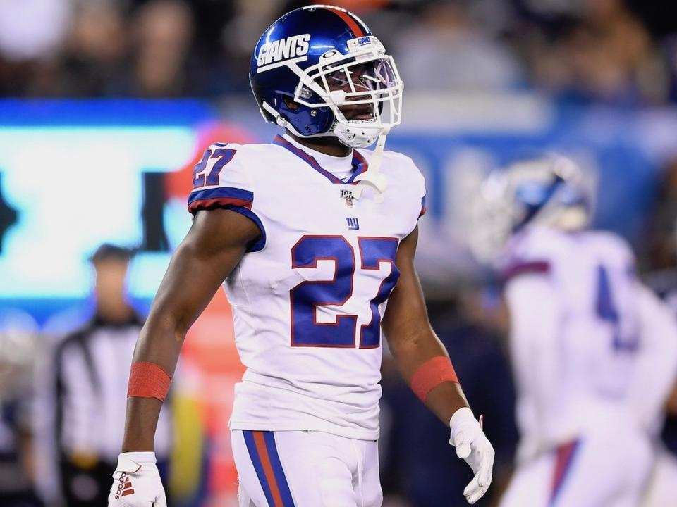
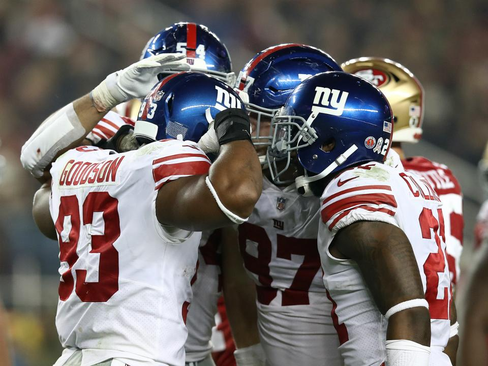

NFL: megvan az első Eagles-siker, újra nyert a ColtsA tengerentúli profi amerikaifutball-bajnokság (NFL) 2020-as alapszakaszának 4. fordulójában a Philadelphia Eagles a San Francisco 49ers, az Indianapolis Colts a Chicago Bears, a Buffalo Bills pedig a Las Vegas Raiders otthonában nyert. Tovább..
|

NFL: óriási sérüléshullám, több csapat is bajba kerültTöbb sztár is megsérült az NFL alapszakaszának 2. fordulójában. Tovább..
|

NFL: Browns, Giants, Redskins – megvannak a „fekete hétfő” első áldozataiAhogyan az lenni szokott, a tengerentúli profi amerikaifutball-bajnokság (NFL) alapszakaszának záró fordulóját követő hétfőjén (Black Monday)... Tovább..
|

NFL: ártatlanságukat bizonyítanák a rablással vádolt játékosokÜgyvédeik bejelentése szerint ártatlan a profi amerikaifutball-ligában (NFL) játszó DeAndre Baker és Quinton Dunbar, akiket fegyveres rablás miatt köröz a floridai rendőrség. Tovább..
|

NFL: fegyveres rablás miatt körözik a Giants és a Seahawks játékosátA floridai Miramar város rendőrsége kőrözést adott ki az egyaránt a profi amerikaifutball-ligában (NFL) játszó DeAndre Baker... Tovább..
|

NFL: majdnem újabb Mullens-csoda, a Giants drámai győzelmeA New York Giants 27–23-ra legyőzte a San Francisco 49erst az NFL 10. fordulójának záró mérkőzésén, a Hétfő esti rangadón (Monday Night Football). Tovább..
|

A málészájú kisöcsi, aki kétszer is megtréfálta Tom BradyéketTizenhat idény, két Super Bowl-győzelem, két nagydöntős MVP-cím és négy Pro Bowl-meghívó után szögre akasztotta sisakját Eli Manning. Tovább..
|

NFL: visszavonul a kétszeres Super Bowl-győztes Eli ManningTizenhat idény után befejezi profi pályafutását Eli Manning, az NFL-ben szereplő New York Giants irányítója – adta hírül a Giants. Tovább..
|

NFL: sorozatban negyedszer is kikapott a GiantsA profi amerikaifutball-bajnokság 7. fordulójának záró mérkőzésén az Atlanta Falcons hazai pályán győzte le 23–20-ra a New York Giants csapatát. Tovább..
|